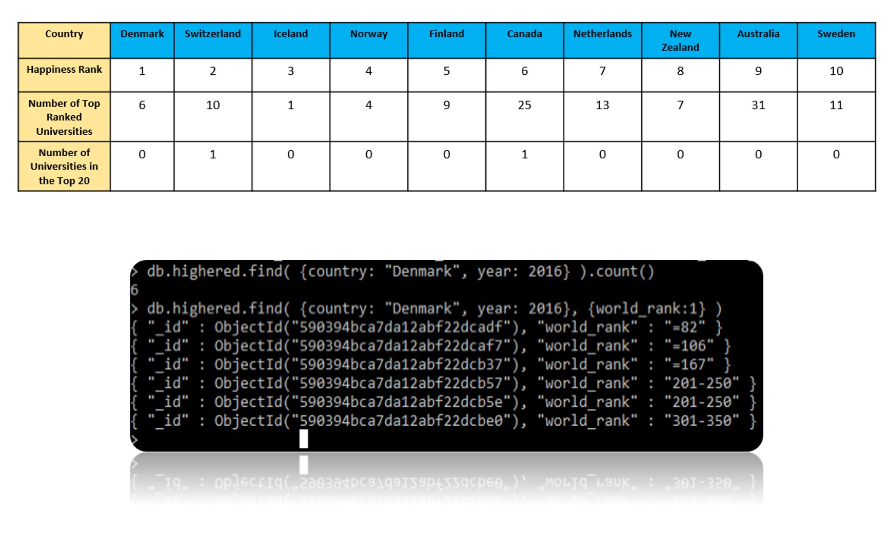

I590 SQL NoSQL
Indiana University
This website was created to present my work related to my Final Project for I590 SQL NoSQL class taught by Professor Ying Ding at Indiana University. The presentation of this work is strictly for academic purposes
Introduction
The correlations between the happiness of a country and variety of factors have been accounted for in a dataset known as the
World Happiness Report. This report does not contain any data relating to how education may impact happiness of country. For this
final project I queried three different datasets: The 2016 World Happiness Report, the Times Higher Education World University
Rankings 2011 -2016, and a National Center for Education Statistics dataset on expenditures on education as a percent of GDP by country.
I chose Mongodb, a NoSQL database, to store and query these collections of data and I also created XML databases
to help present the data. You can click on the links below to view the XML pages and review the collections of data.
